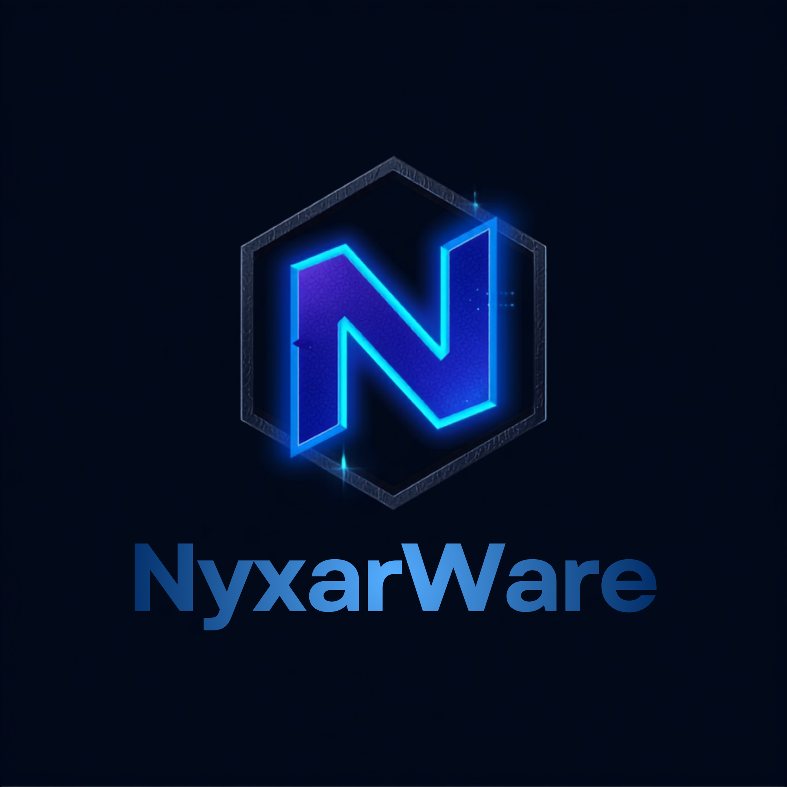

Gelişmiş performans, hafif mimari ve kesintisiz altyapı sunan resmi NyxarWare istemcisi.
Sistem performansı ve bağlantı hızlarımız gerçek zamanlı olarak takip edilir
Neden NyxarWare en çok tercih edilen istemci?
Steam bulut güncelleme sorunu yoktur
Ayarlarınızı bulutta saklayın, istediğiniz cihazdan tek tıkla profil yükleyin veya paylaşın.
Sisteminize uygun istemciyi indirin ve hemen kullanmaya başlayın
Windows 10 ve Windows 11 (64-bit) tüm güncel sürümleri tam olarak desteklenmektedir.
İndirdiğiniz istemciyi çalıştırıp NyxarWare hesabınızla giriş yapmanız yeterlidir. Kurulum tamamen otomatiktir.